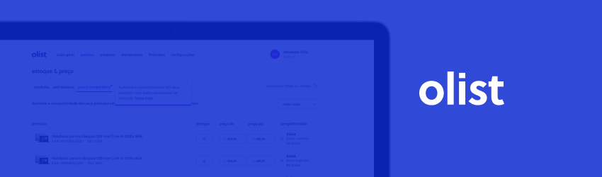

Olist E-commerce Report
Link to the Online Report: E-commerce Overview
1. Overview
Olist is a Brazilian company that runs an e-commerce platform connecting small and medium-sized businesses with major marketplaces. They assist these companies in expanding their online presence and boosting sales by offering an all-in-one solution that streamlines the selling process across multiple channels. Olist also provides logistics services and support to help sellers efficiently manage their businesses.
2. Business Problem
The need to develop a dashboard for Olist arose from the business team's struggle to gain insights for strategic decision-making. Without an accessible view of various operational aspects such as product characteristics, payment methods, order progression, and customer reviews, the company's ability to understand its current operations and identify improvement opportunities was hampered.
Moreover, there was a need to closely monitor growth metrics like revenue, cohort analysis, and Pareto analysis to guide strategic planning and resource allocation more effectively. Hence, the creation of the dashboard aimed to centralize and visualize these pieces of information clearly and accessibly, empowering the business team to make informed and agile decisions to drive the company's growth and success.
Faced with these challenges, dashboard development became a strategic priority for Olist. By consolidating relevant data and providing actionable insights on a single platform, the dashboard would offer a holistic view of the business, enabling the team to identify trends, streamline processes, and proactively respond to market demands.
3. Solution
The solution presented to Olist's business team is a Power BI report providing valuable insights across various key areas of the business. The developed report consists of 6 dashboards, each catering to one of the views requested by the business team.
- Product View: This view provides insights into the products being sold. In this view, we can visualize the product categories being traded and the quantity sold within each category. It also shows the total number of photos used by the ads in each category.
- Payment View: Here, insights are presented on the types of payments used by customers. This includes analyses of the most common payment methods, the average transaction value per payment method, as well as information on order status. With these informations, Olist can optimize its payment strategy to better meet customer preferences and increase sales conversion.
- Order View: This dashboard allows tracking the evolution of orders placed and comparing them with established goals. It offers detailed analyses on order volume, growth rate of sales volume compared to annual and monthly goals, and more.
- Reviews View: Here, factors influencing customers' evaluations of Olist's products and services are analyzed. This includes analyses of delivery time, clustering to identify states that evaluate similarly, among others. With these insights, the company can identify areas for improvement and implement measures to ensure a positive customer experience.
- Sellers View: This report presents characteristics of the sellers in the base, such as location, sales value, sales performance over time, among others. This allows Olist to evaluate its sellers' performance, identify the most successful ones, and provide additional support to those facing challenges.
- Sales View: Finally, this report offers a comprehensive view of the company's revenue evolution, including cohort analyses and Pareto analysis. This allows Olist to identify sales trends over time, assess the impact of marketing initiatives, and identify the most profitable customers.

4. Insights
With the analyses conducted, we can identify insights that might go unnoticed by the business team. Among them, some notable ones are:
- More than 50% of the sales volume is generated from customers in the states of São Paulo and Rio de Janeiro.
- Credit card is the preferred payment method for customers, accounting for nearly 80% of transactions.
- The state of Paraná sells much more than it buys: it ranks second in sales volume by sellers, while it ranks fifth in terms of purchasing volume by customers. This represents an approximate ratio of 2:1.
5. Future Enhancements
This project was developed to address current business team inquiries, providing them with a comprehensive and data-driven view of the business operations. Although this project was developed using a public dataset that doesn't receive constant updates, in a real scenario, we could consider the following improvements:
- Addition of New Indicators: Identify and add new key performance indicators (KPIs) that can provide additional insights into the business.
- Implement Machine Learning: Introduce machine learning algorithms to predict sales trends, identify customer behavior patterns, and suggest actions for process optimization.
- Enhancement of User Interface: Improve the usability and user experience of the dashboard, making it more intuitive, responsive, and easy to use.
Thanks for reading me project!
If you have any questions or suggestions, please feel free to reach out. Your feedback is always welcome!
- estudosgustavo@gmail.com
- GitHub
- Blog Pessoal